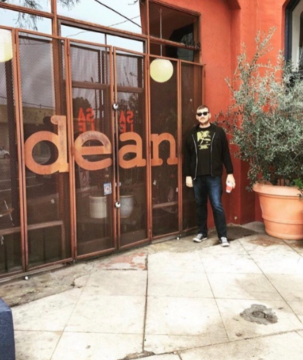
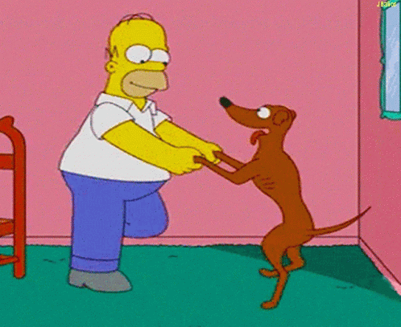
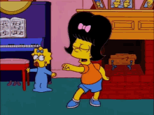
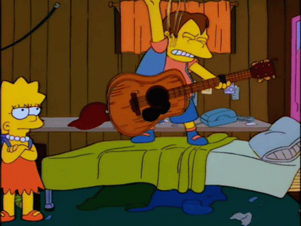
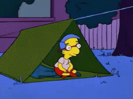
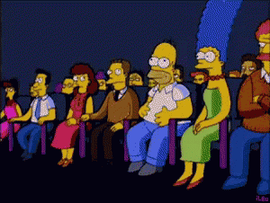
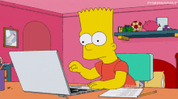

These are the things that make up my life...

I live with a lovable pup named Sebastian

I have three little nieces that I love to have fun with

I am a songwriter and play with my band

I love nature and hiking in the wilderness

I love reading; Favorite writers include Phillip Roth, Hunter Thompson, Joan Didion and Bukowski

I am a volunteer Court Appointed Advocate for foster youth with C.A.S.A of Kings County

I love movies. Especially going to the theater(even tho there isn't much playing there as of late)

And these days, I spend most of my time on the laptop learning how to write code. Thank you, Bitwise!
Music is a big part of my life. I immensely enjoy writing, playing and listening to it. I love going to live shows and movies. I love to read and have a large collection of books adorning my shelves. I love nature and try to get up to Sequoia Park whenever I can(and it's not burning).
About three years ago I became a Court Appointed Special Advocate for Foster Youth. It involves being a mentor and a steady presence in the life of a child in the foster care system. Many of these children get moved around so often and deal with so many different foster parents and social workers, that they lack any stabalizing force in their lives. As an advocate you are a constant in this child's life that they can develop a bond and trust with that can often be difficult for them.
I have been working with a fifteen year old boy for around two years and it has been a great experience. He has opened up to me after an initial distrust that comes from being in the system for over ten years. We have had many great times togther and I was able to take him to the mountains, the aquarium, Disneyland and Magic Mountain; all places he had never even considered a possibilty. Being an advocate has been one of the most rewarding experiences of my life.
For information on becoming an advocate for foster youth, please click the image below: